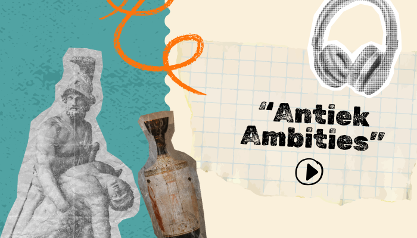
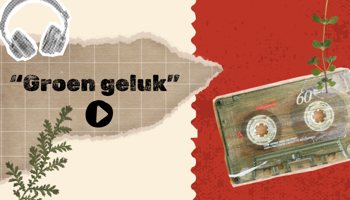
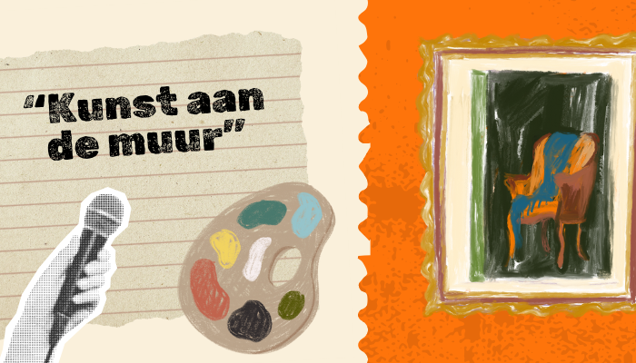

Aflevering 1: "Antiek Ambities"

Ontdek hoe antieke meubels en decorstukken een tijdloze charme aan je interieur kunnen toevoegen. Van het vinden van verborgen parels op vlooienmarkten tot tips voor het combineren van oud en nieuw.
Aflevering beluisteren
Aflevering 2: "Groen Geluk"

Kamerplanten zijn meer dan decoratie. Ontdek hoe je planten integreert in je interieur, van indrukwekkende hangplanten tot kleine groene accenten, en leer over onderhoudstips.
Aflevering beluisteren
Aflevering 3: "Kunst aan de Muur"

Kunst voegt persoonlijkheid toe aan elke ruimte. In deze aflevering praten we over het kiezen, ophangen en combineren van kunstwerken die je interieur compleet maken.
Aflevering beluisteren